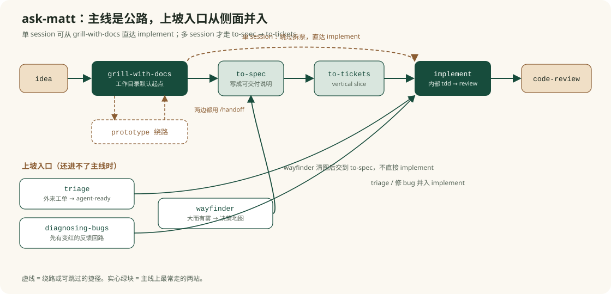
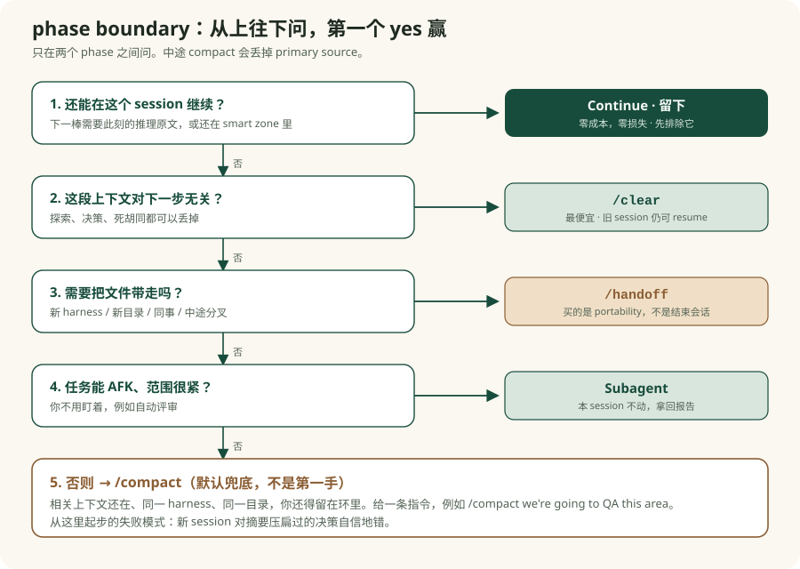

triage
处理“不是你自己想出来，而是外部送来的工作”。目标是把原始 issue / PR 变成 agent-ready brief。
Reference
这页是第二课的压缩卡片。忘了 `ask-matt` 在做什么时，不要回忆每句原文，先回来找这四个问题：主线是什么？哪些是上坡入口？哪些技能独立存在？phase boundary 怎么选？
`ask-matt` 不是列 skill 名单，而是把这些 skill 排成“何时走哪条路”的路由图。

| 阶段 | 作用 | 关键判断 |
|---|---|---|
| grill-with-docs | 先把想法磨清楚，并把 glossary / ADR 之类的文档顺手沉淀下来。 | 只要在工作目录里，就优先从这里起步。 |
| prototype | 当一个问题必须靠可运行原型来判断时，先做 throwaway prototype。 | 它是主线里的绕路，不是默认步骤。 |
| to-spec | 把已有讨论综合成 spec，并明确测试 seam。 | 不重新 interview，只综合已有上下文。 |
| to-tickets | 把 spec 拆成 tracer-bullet vertical slices，标出 blocking edges。 | 多 session 构建优先走这里。 |
| implement | 按 spec 或 ticket 实现，内部驱动 `tdd`，收尾跑 `code-review`。 | 单 session 可以直接进入；多 session 应先拆票。 |
处理“不是你自己想出来，而是外部送来的工作”。目标是把原始 issue / PR 变成 agent-ready brief。
处理“系统坏了”。它先要求 tight feedback loop，再进入 minimisation、hypothesis、instrument、fix。
处理“工作太大、太模糊，一个 session 装不下”。先做 decision map，地图清楚后再并回主线。
`grill-me`、`grilling`、`prototype`、`research`、`to-questionnaire`、`wizard`、`wait-what`、`teach`、`writing-for-agents` 等，都可以脱离主线直接被用。
`domain-modeling` 管项目语言，`codebase-design` 管深模块与 seam 的语言。上层 skill 会拉它们进来，但它们自己也能单独使用。

| 选项 | 什么时候优先考虑 |
|---|---|
| Continue | 下一阶段还需要当前阶段作为 primary source，或者上下文窗口还足够。 |
| /clear | 当前上下文对下一步完全无关，丢掉也不心疼。 |
| /handoff | 需要跨 harness、跨目录、交给同事，或中途分叉侧任务。 |
| Subagent | 任务范围紧，且你可以离开键盘让它自己跑完。 |
| /compact | 前面四项都不合适时的默认兜底。 |